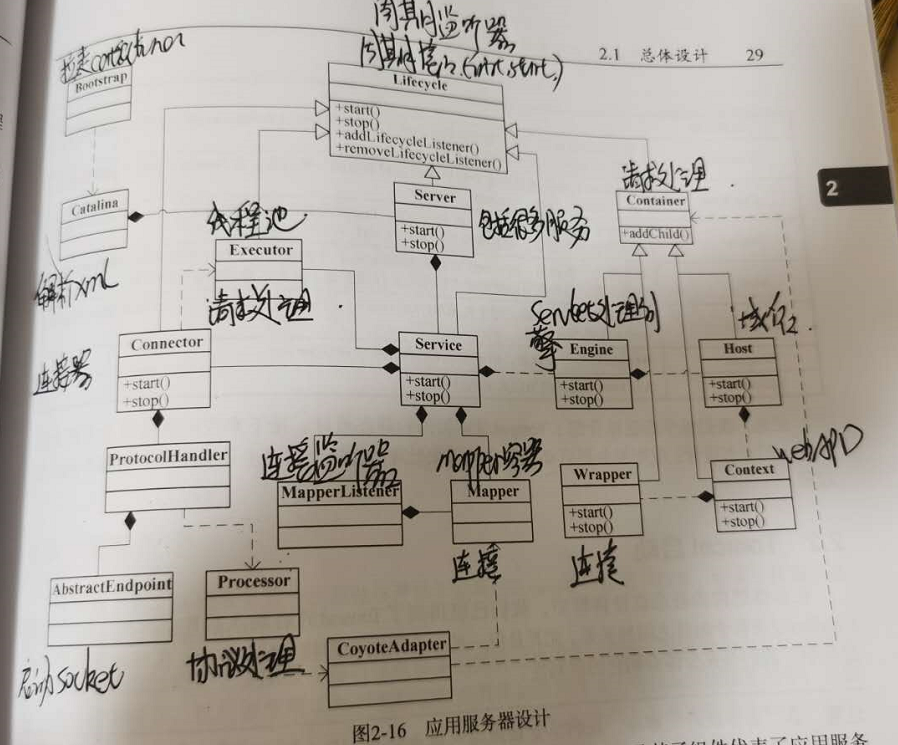
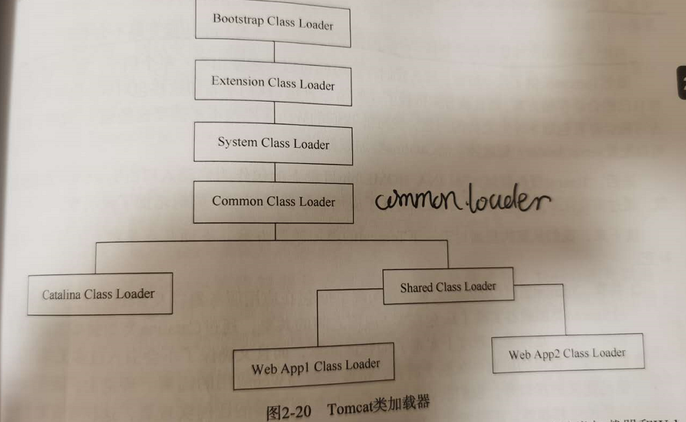

tomcat介绍
应用服务器和Web服务器的区别
应用服务器（如Tomcat)，是作为复杂业务逻辑处理的服务器，侧重于构建业务系统的组件支撑，以简化复杂系统的构建工作
Web服务器（如Nginx），侧重于HTTP请求（静态资源）的处理。
原因：对于Tomcat，一般情况下都是阻塞式的，对于每个请求，Tomcat会创建一个新的线程来处理请求，在大并发场景下，请求量较大，远远超过了系统的线程容量，导致系统可能出现宕机。特别是对于静态资源，如果静态资源相对较大的话，阻塞式的请求处理，会大大拖低系统的处理能力，让系统无法处理到来的请求。所以需要Nginx web服务器来处理静态资源，将对于静态资源的请求（如css文件，js文件）等用Nginx来进行。由于Nginx服务器对于每个请求，都是用进程来进行处理，默认情况下每个核一个进程来进行，不会有线程创建和释放的消耗。所以线程相对较好。（Nginx为啥子好，还不太清楚）。而对于业务的请求，通过Nginx进行转发到Tomcat应用服务器来进行处理，通过tomcat来处理复杂的请求。
业界通用的请求处理模式如下：
请求 —–> Gateway（负载均衡，鉴权） ——> Nginx(处理静态资源) ——-> tomcat（处理Rest请求等）
Gateway分为外部请求和内部请求，有些时候两次会合一。
Tomcat总体架构
Tomcat总体架构如下

- Bootstrap:通过Bootstrap来拉起tomcat实例
- Catalina:通过Digester组件来解析server.xml文件，拉起Catalina实例
- Server:通过Catalina来初始化Server。每个Server等实例都继承Lifecycle接口，实现对该实例进行周期管理
- Service:与Server是多对一的关系，Server下管理多个应用程序
- Connector:作为Service的组件之一，主要负责请求的接收，协议处理等，处理请求的URL和请求的信息
- Engine：引擎，与Service也是多对一的关系，也是一个容器，相当于请求处理的集合，包含请求的各个部分
- AbstractEndpoint:与端口进行对应，主要的作用是从指定的端口读取数据，包括启动端口监听等
- Processor:协议处理类，主要是对读取的数据进行指定协议的处理，处理出请求的数据出来
- MapperListener:连接监听器，不是ProtocolHandle处理的一部分，而是Service请求的一部分，主要是对抽取出来的请求进行处理，进行Mapper映射
- Mapper:存储着对象的映射
- Host：相当于域名服务器，对一个域名中的所有请求进行处理
- Context：相当于一个webapp
- Wrapper:相当于URL请求映射，包含Servlet请求。
- 对于每一个Engine，Host，Context和Wrapper，都有一个Pipeline，每个Pipeline都使用了责任链模式，可以对请求进行拦截处理
- 经过以上的Pipeline层次之后，才会经过Filter（Filter也是责任链模式），用来对请求进行处理，在Servlet请求的前面。
Tomcat类加载器

- Bootstrap层次：主要加载jre核心类，可以通过-bootclasspath的方式来进行负载
- Extension层次：主要是用来加载Java核心代码，对于核心代码进行修改，可以通过以上的方式
- System层次：对于-classpath和-module-path的jar包，一概都是由System类加载进行加载。所以，对于应用程序来说，大部分的类都是由System Class Loader来加载的。只有类是由System层次加载的，才会使用CDS（Class Data Sharing)来进行加载的。对于bootstrap.jar和catalina-juli.jar都是由该类加载进行加载。
- Common Class Loader:Common类加载器是Tomcat类加载器，主要用来加载Tomcat启动应用服务器内部和Web应用均可见的类。可以在catalina.properties进行配置。
- Catalina Class Loader:用来加载只有Tomcat应用服务器内部可见的类，对于业务是不可见的。可以在catalina.properties进行配置。
- Shared Class Loader:用来加载Web应用共享的类，这些类Tomcat服务器不会依赖。可以在catalina.properties进行配置。
- Web App Class Loader:用来加载Web应用的类，该类只有该Context下才可见。
Tomcat提供的Web应用类加载器与默认的委托模式有所不同。当进行类加载时，除JVM基础类库外，它会首先尝试通过当前类加载器加载，然后进行委托。Servlet规范相关API禁止通过。
- 从缓存中加载
- 如果没有，则从JVM的Bootstrap类加载器加载
- 如果没有，则从当前类加载器加载，按照WEB-INF/classes，WEB-INF/lib的顺序
- 如果没有，则从父类加载器加载，由于父类加载器采用默认的委派模式，所以加载顺序为System，Common，Shared。
Tomcat提供了delegate属性用于控制是否启动Java委派模式，默认为false（不启动），当配置为true的时候，Tomcat将使用Java默认的委派模式，即
- 从缓存中加载
- 如果没有，从JVM的Bootstrap类加载器加载
- 如果没有，则从父类加载器加载（System,Common,Shared)
- 如果没有，则从当前类加载加载
Tomcat还可以通过packageTriggersDeny属性只让某些包路径采用Java的委派模式，Web应用类加载器对于符合packageTriggersDeny指定包路径的类强制采用Java的委派模式。
Tomcat通过该机制实现为Web应用中的Jar包覆盖服务器提供包的目的。Java核心类库/Servlet规范相关类库是无法覆盖的，此外Java默认提供的诸如XML工具包，由于位于JVM的Bootstrap类加载也无法覆盖，只能通过endorsed的方式来实现。
Web请求处理
- 根据Connector的请求和响应对象创建Servlet请求和响应
- 转换请求参数并完成请求映射
- 得到当前的Engine的第一个Valve并执行，完成客户端请求处理
- 对于Engine，Host，Context，Wrapper中Pipeline中Valve进行处理
- 对于ApplicationFilterChain和Filter进行处理
- 找到对应的Servlet，并进行处理
Tomcat配置文件
- catalina.properties:该列主要是对类加载器的配置
- server.xml：用来配置启动过程的Service，Host，Context等配置
- context.xml：用来配置寻找web.xml
- web.xml：主要是类的应用逻辑的配置，包括Filter配置等